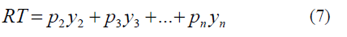
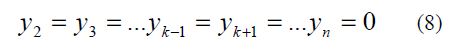
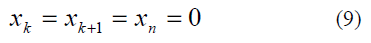
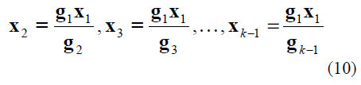
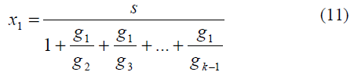
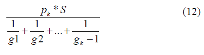

|
ETAPA 4: RENDIMENTO SUSTENTÁVEL ÓTIMO O rendimento total RT do corte é expresso por:  onde yi refere-se a árvores da i-ésima classe (i=2,3,...,n) e pi o valor econômico de cada árvore na i-ésima classe. O rendimento sustentável ótimo é obtido cortando todas as árvores de uma classe de altura específica e nenhuma árvore de qualquer outra classe [5]. Seja RTk o rendimento obtido cortando todas as árvores da k-ésima classe e nenhuma árvore das outras classes. O maior valor de RTk para k=2,3,..,n será, então, o rendimento sustentável ótimo e o correspondente valor de k será a classe que deveria ser completamente cortada para obter este rendimento sustentável ótimo. Como nenhuma classe é cortada, exceto a k-ésima classe, tem-se:  Além disso, como todas as árvores da k-ésima classe são cortadas, não restam árvores para cortar na k-ésima classe e nunca há árvores nas classes de altura acima da késima classe. Assim,  Substituindo (7) e (8) na condição de corte sustentável (6) e manipulando as equações algébricas tem-se:  Substituindo (9) e (10) em x1+x2+...+xn = S e resolvendo em x1 obtém-se:  Para obter o rendimento RTk, combinou-se (7), (8), (10) e (11). Assim sendo, tem-se o modelo matemático simplificado referente ao rendimento sustentável ótimo, a partir do maior valor de:  onde k é o numero da classe que é completamente cortada (para i = 2,3,...,n), pk é o valor econômico da classe k, S é o número total de árvores na floresta e gk é a fração das árvores da k-ésima classe que passam para a (k+1)-ésima classe durante o período de crescimento [5]. Aplicando (12) nos valores das Tabelas II e III obtem-se os seguintes resultados:
Assim observou-se que a classe que deve ser cortada completamente para que haja o rendimento sustentável ótimo, é a classe 3, que compreende os eucaliptos entre 21.19 e 22.88 metros com um rendimento sustentável ótimo. |